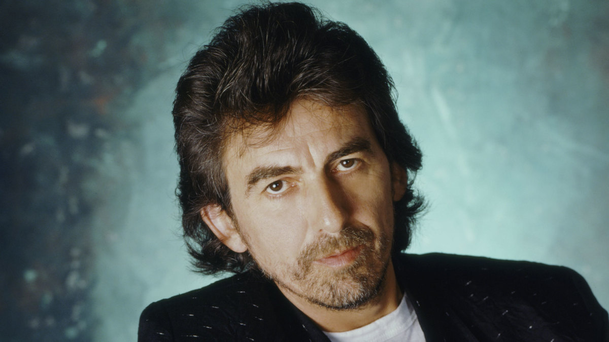

Short Biography
George Harrison (25 February 1943 - 29 November 2001) was an English musician, singer-songwriter, and music and film producer who achieved international fame as the lead guitarist of the Beatles. Harrison embraced Indian culture and helped broaden the scope of popular music through his incorporation of Indian instrumentation and Hindu-aligned spirituality.
The quiet Beatle
McCartney had recently joined up with another Liverpool teenager, John Lennon, in a skiffle group known as the Quarrymen. In 1958, Paul had been pushing the 17-year-old Lennon to let the 14-year-old Harrison join the band, but Lennon was reluctant to let the youngster team up with them. As legend has it, after seeing McCartney and Lennon perform, Harrison was finally granted an audition on the upper deck of a bus, where he wowed Lennon with his rendition of popular American rock riffs. With the rise to fame of the now called The Beatles, made up of George, Paul, John and Ringo, Harrison became known as "the quiet Beatle". From the start most of the songwriting was done by the couple Lennon-McCartney, but later on Harrison started contributing with his own work. This resulted in some of the most iconic songs of The Beatles like: Here Comes the Sun, Something, While My Guitar Gently Weeps, Within You Without You, Taxman, among others.
While Harrison grew as a songwriter, his compositional presence on Beatles albums remained limited to two or three songs, increasing his frustration, and significantly contributing to the band's break-up
Solo career
Before the Beatles' break-up, Harrison had already recorded and released two solo albums: Wonderwall Music and Electronic Sound, both of which contain mainly instrumental compositions. For many years, Harrison was restricted in his songwriting contributions to the Beatles' albums, but he released All Things Must Pass in 1970, a triple album with two discs of his songs and the third of recordings of Harrison jamming with friends. The album was regarded by many as his best work, and it topped the charts on both sides of the Atlantic. The LP produced the number-one hit single "My Sweet Lord" and the top-ten single "What Is Life". The next year he made a charity event with Ravi Shankar to raise money to aid starving refugees during the Bangladesh Liberation War named The Concert for Bangladesh. With the same name, an album of the show was released wich featured Dylan, Clapton, Leon Russell, Badfinger, Preston and Starr. The following two albums, Living in the Material World and Dark Horse, were filled with Harrison's Hindu beliefs which, with some other tour complications, led to an overall negative reaction of the public. Along came Extra Texture and Thirty Three & 1/3. With an emphasis on melody and musicianship, and a more subtle subject matter than the pious message of his earlier works, the latter earned Harrison his most favourable critical notices in the US since All Things Must Pass. In 1979, Harrison released George Harrison, which followed his second marriage and the birth of his son Dhani. The album marked the beginning of Harrison's gradual retreat from the music business, with several of the songs having been written in the tranquil setting of Maui in the Hawaiian archipelago.
The murder of John Lennon on 8 December 1980 disturbed George and reinforced his decades-long concern about stalkers. Harrison modified the lyrics of a song he had written for Starr in order to make the song a tribute to Lennon. "All Those Years Ago", which included vocal contributions from Paul and Linda McCartney, as well as Starr's original drum part, peaked at number two in the US charts. The single was included on the album Somewhere in England in 1981. Harrison did not release any new albums after 1982's Gone Troppo received little notice from critics or the public, until November 1987, when the platinum album Cloud Nine came out. Years after an attack on his home that left him hospitalized for multiple stab wounds, George began treatment for lung cancer that had spread to his brain. On 29 November 2001, Harrison died at a property belonging to McCartney at his 58 years of age.His final message to the world, as relayed in a statement by Olivia and Dhani, was: "Everything else can wait, but the search for God cannot wait, and love one another."
Interesting Facts
- In June 1965, Harrison and the other Beatles were appointed Members of the Order of the British Empire (MBE). They received their insignia from the Queen at an investiture at Buckingham Palace on 26 October.
- Harrison was really into gardening, describing it as a form of escapism: "Sometimes I feel like I'm actually on the wrong planet, and it's great when I'm in my garden, but the minute I go out the gate I think: 'What the hell am I doing here?'". Also his autobiography, I, Me, Mine, is dedicated "to gardeners everywhere".
- His twelfth and final studio album, Brainwashed, was released posthumously on 18 November 2002, almost a year after his death at age 58, and 15 years after his previous studio album, Cloud Nine. The album's overdubs were completed by his son Dhani, session drummer Jim Keltner, and longtime friend and collaborator Jeff Lynne.
- A documentary film entitled George Harrison: Living in the Material World, directed by Martin Scorsese, was released in October 2011. The film features interviews with Olivia and Dhani Harrison, Klaus Voormann, Terry Gilliam, Starr, Clapton, McCartney, Keltner and Astrid Kirchherr.
I think people who truly can live a life in music are telling the world, ‘You can have my love, you can have my smiles. Forget the bad parts, you don’t need them. Just take the music, the goodness, because it’s the very best, and it’s the part I give most willingly.
-George Harrison
For more information about Sir George, you can read his Wikipedia page!